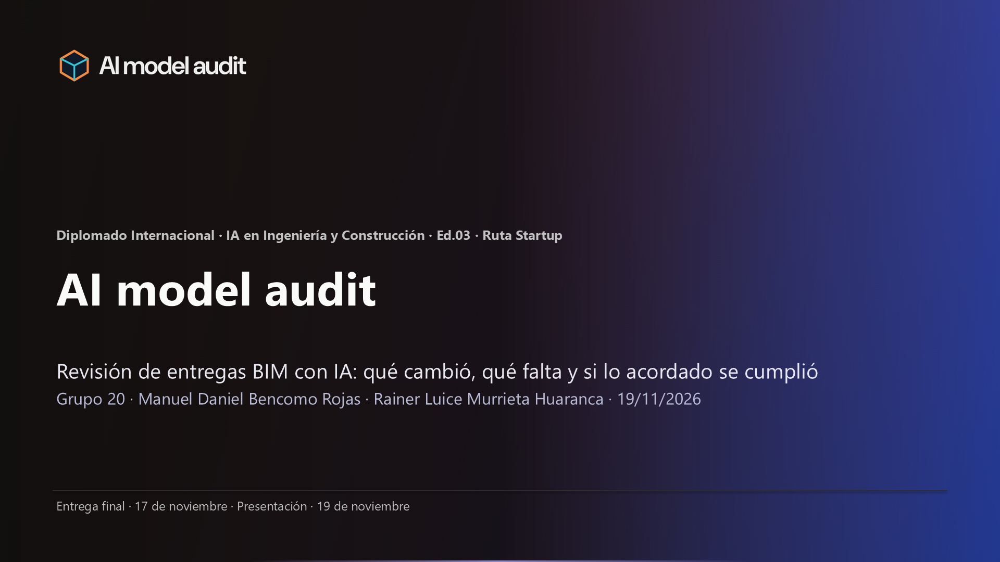
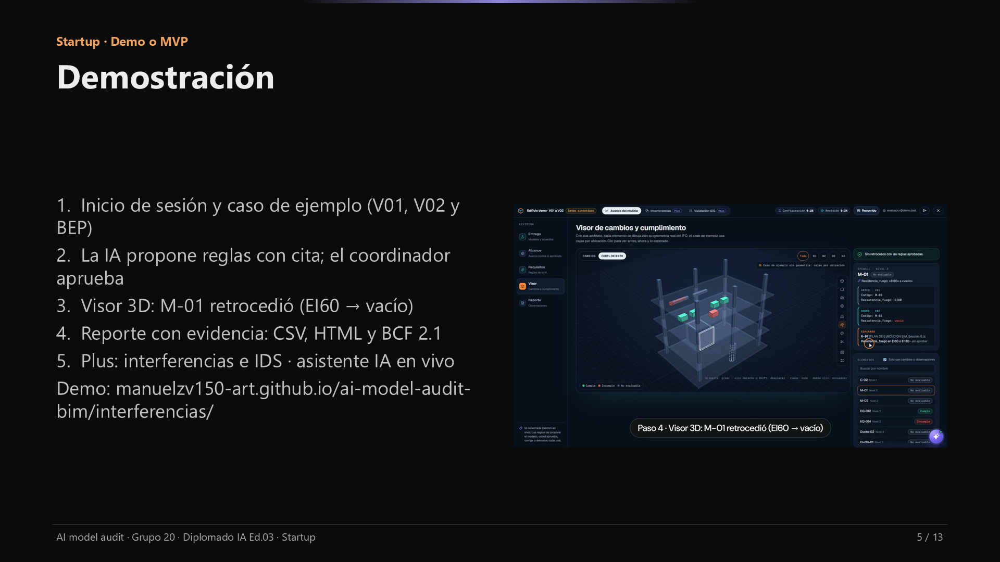
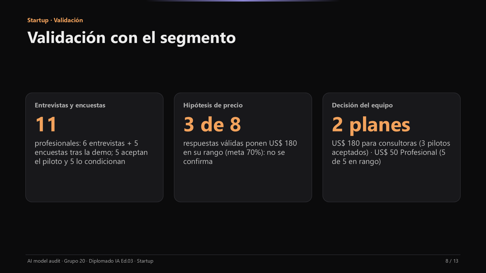
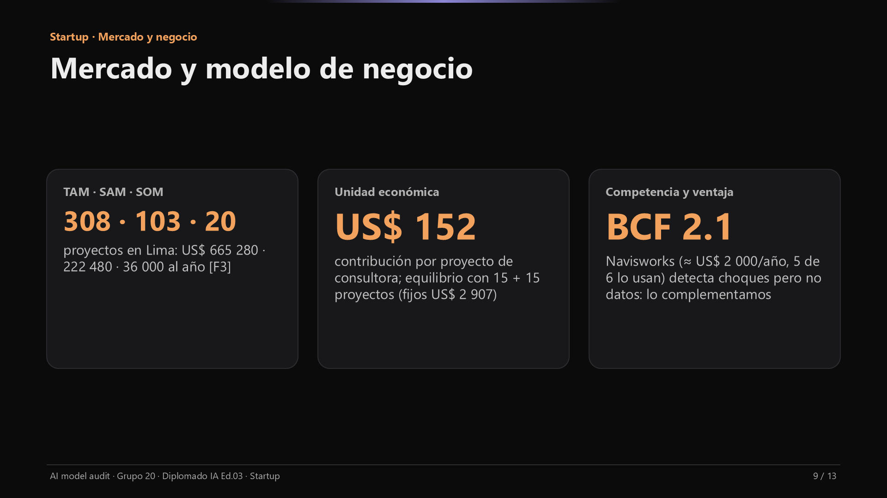
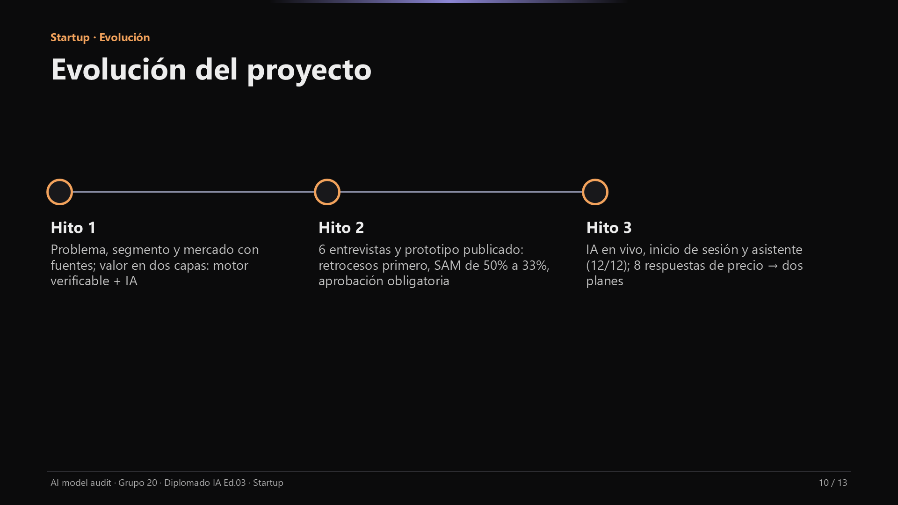
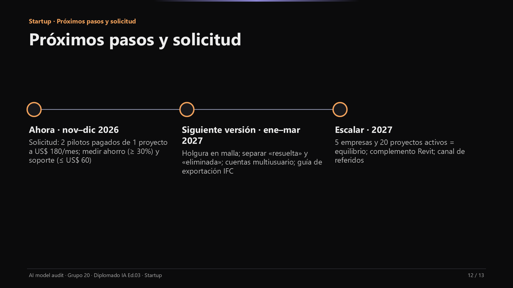
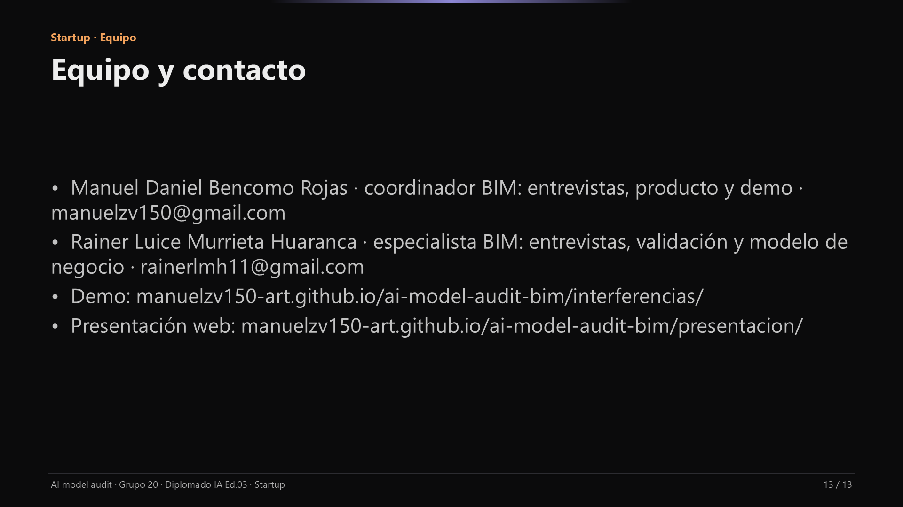

AI model audit · Presentación final · Grupo 20

Módulo · Avance del modelo






←
→
⛶
![Startup · Problema y segmento — Problema y usuario — El problema — • Revisar una entrega BIM es manual: 22,5 h de mediana por auditoría (rango 9–36 h) • 6 de 6 empresas entrevistadas tuvieron retrabajo en los últimos 3 meses • Caso real AICC: el modelo creció 74% y el cumplimiento bajó de 37,1% a 33,5% • Por qué ahora: BIM obligatorio en 14 tipologías de inversión pública desde agosto de 2026 [F1] — El usuario y el cliente — • Usuario: coordinador BIM que revisa modelos de terceros contra el BEP (6/6 tienen BEP) • Paga: director o gerente de consultoras BIM y de ingeniería de Lima • Hoy usa Navisworks (5 de 6), que detecta choques pero no compara información • Desde el Hito 1: foco en la información que se pierde y en los retrocesos](slides/02.png)

![Startup · Arquitectura — Arquitectura final — Entrada V01 y V02 en IFC + texto del BEP o actas; se leen en el navegador — Procesamiento con IA Gemini 3.5 Flash-Lite vía Cloudflare Worker propone reglas con cita (JSON de esquema cerrado) — Revisión humana El coordinador aprueba, corrige o devuelve; un motor determinista verifica — Resultado Visor 3D, reporte CSV/HTML y BCF 2.1; Plus: interferencias e IDS — Controles El IFC nunca sale del navegador · la clave de IA vive solo en el Worker · nada se verifica sin aprobación · «No evaluable» nunca cuenta como cumplido · asistente IA con ficha verificada](slides/04.png)
![Startup · Pruebas — Pruebas — Caso ejecutado · Criterio de aceptación · Resultado · Corrección aplicada — Prueba B · 6 usuarios, 6 tareas sin ayuda · ≥ 80% de éxito en T1–T4 y SEQ ≥ 5,5 · 36/36 logradas · SEQ 6,3 · T5 con dudas → etiqueta CHOQUE DURO / FALTA DE HOLGURA — Prueba D · motor vs. IfcOpenShell e ifctester (MARIAN) · Mismos veredictos que la referencia · 88/88 información · 92/92 IDS · choques: precisión 100% · Holgura entre muros 13,8% → medición en malla (fase 1) — Prueba E · reglas con Gemini en vivo · ≥ 80% de reglas útiles · 14 de 15 (93%); IDS desde texto 5/5 · Aprobación humana obligatoria; esquema JSON cerrado — Prueba F · asistente IA (12 preguntas, 3 rondas) · 0 cifras inventadas y ≥ 11/12 · 10/12 → 10/12 → 12/12 · Respuesta «sin dato» + ficha verificada — Casos reales AICC y MARIAN (4 IFC) · Leer IFC reales de hasta 66 MB · Lectura 1,3 s · choques 2,5 s · Separar «resuelta» de «eliminada» (14/14 eran eliminadas)](slides/06.png)

![Startup · Limitaciones — Limitaciones — Lo que no resuelve todavía — • Holgura entre muros: exhaustividad 13,8% (cajas envolventes) • Requisitos que no viajan en el IFC quedan «No evaluable» • Ahorro (H2) y soporte (H5) sin medir: 0 pilotos firmados • Plan Profesional depende de soporte autoservicio (supuesto de 0,5 h) — Condiciones para usarlo — • Consultoras con BEP o actas e IFC exportado (hoy solo 2 de 6 trabajan con IFC) • Navegador moderno; el modelo IFC no sale del equipo • Toda regla de la IA requiere aprobación del coordinador • Prototipo: inicio de sesión local; datos sintéticos en el caso de ejemplo](slides/11.png)